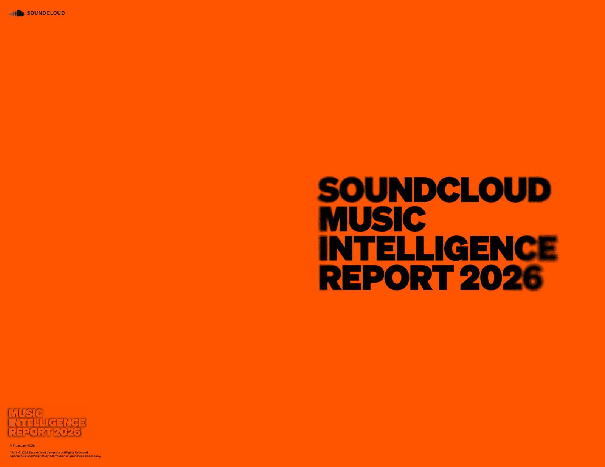
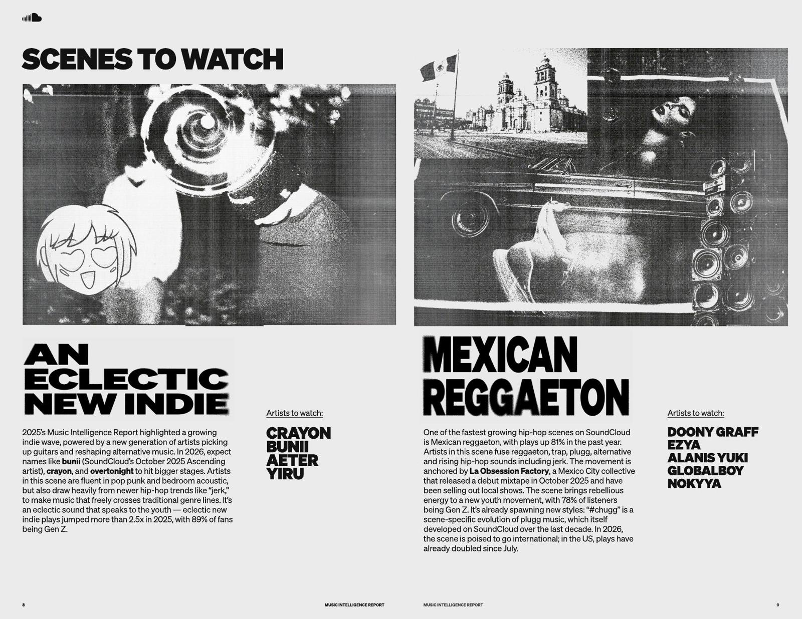
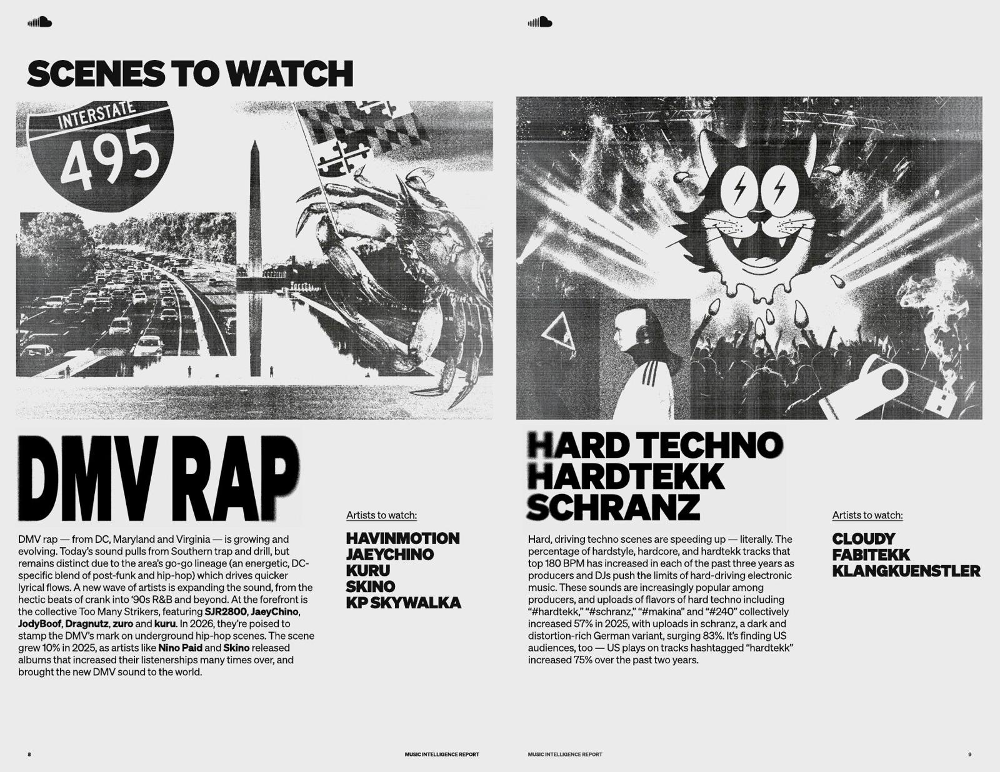
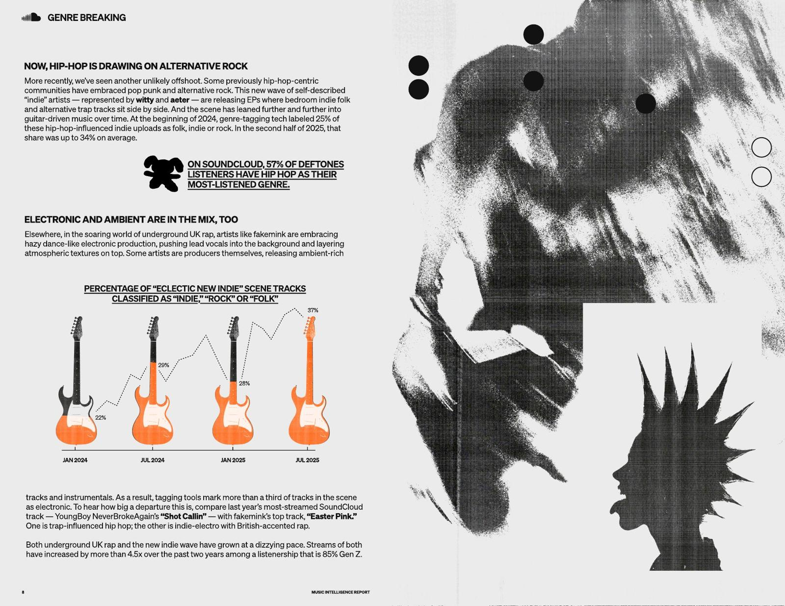
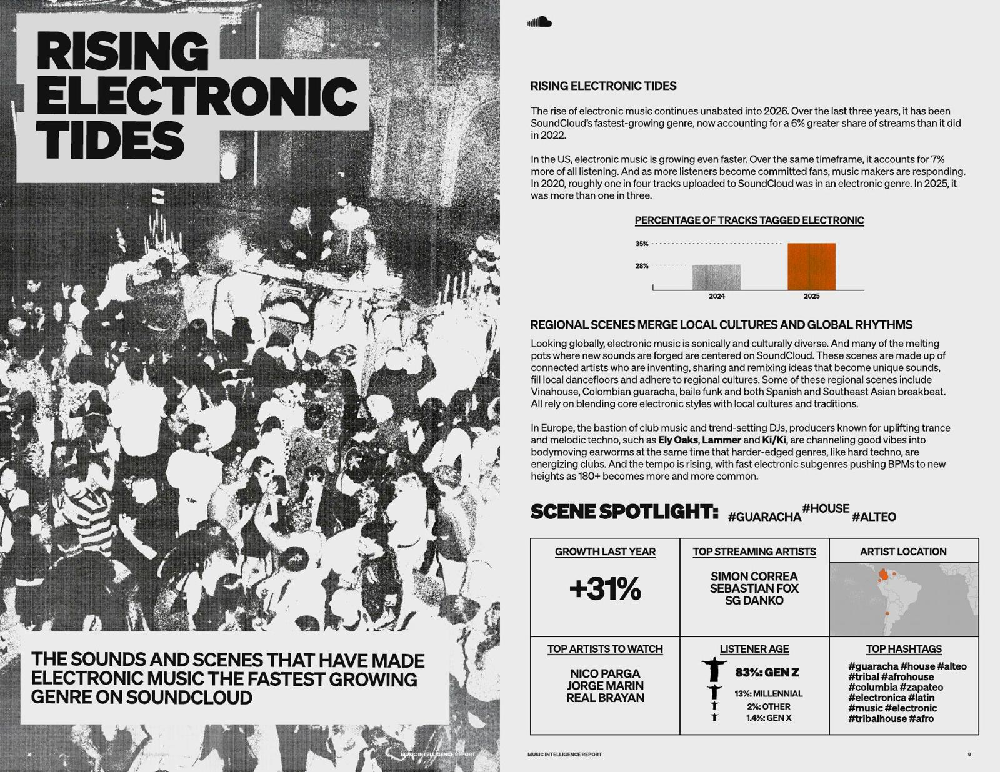
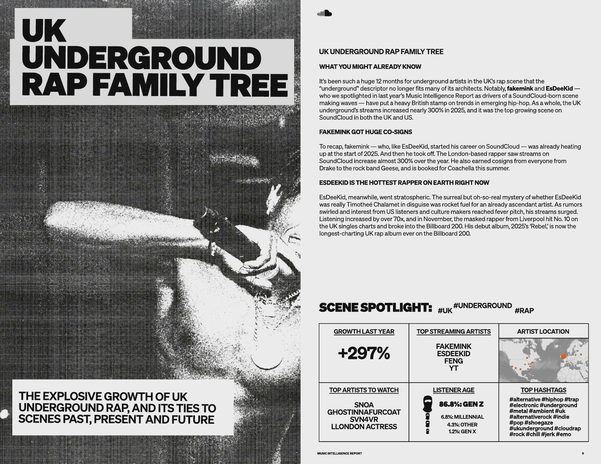

Music Intelligence Report
SoundCloud’s 2026 data report started life as a printed zine. I turned it into a website without losing the photocopy attitude.
Context
A zine full of data, made to be held.
Each year SoundCloud reads its own platform data to show where music is heading: scenes that are growing, genres that are mixing, how people listen. For 2026, a freelance designer turned the report into a printed zine, all xerox texture and loud type.
I was asked to bring that piece to the web, as an interactive site on SoundCloud’s company domain.
The starting point






Spreads from the printed zine, which was not my design. It is here to show what the website had to carry.
Challenge
Keep the zine. Add the web.
Paper is read in order, one spread after another. A site is entered from anywhere, scrolled and skimmed. The report had to work that way without turning into a generic data page.
There was also a lot of content. All of it had to stay, the site could not get tiring, and every page had to follow both the zine and SoundCloud’s brand guide.
Key decision
A home that maps the whole report.
The home page gives every chapter a short summary and a way in, so the reader sees the full report before choosing where to go. A dot rail on the side shows where you are and jumps anywhere.
Each inner page then gives one chapter the room it had in print, paced for scrolling.
The dark panel is a recreation of that index, in the report’s own look.
Templates
Every page designed, some made into templates.
The launch date was close. I designed all the pages, and where chapters shared a structure I turned them into templates, so the developer could build faster without losing the look.
Mobile
The same attitude on a small screen.
I also designed the mobile version. Wide spreads became single columns, and the type kept its weight.
Handoff
From Figma to Webflow, with the motion intact.
I guided the developer who built the site in Webflow: the animations, the spacing, the alignment. The goal was simple, that what went live was what had been designed.
Outcome
A zine you can scroll.
The report went live on SoundCloud’s company site, with the xerox look of the print and the pace of a website.
Its findings were covered by Billboard, Magnetic Magazine and Mixmag, among others.